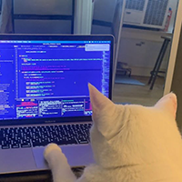

"봤제? 우리처럼 이민자 안 받고 성당 다니며 예수님 믿는게 맞제?" 하고 으쓱거리는 중 ㅋㅋㅋ

대통령도 절대!!!!! 난민 안받겠다고 공언하는 글 올림

(현명)
난민 받을 돈으로 무기사는게 현명ㅋㅋ
과거에는 파시즘 민족주의라고 비판받았는데
나라를 잃어봤던 사람들이라 요즘같은 시대에 조금도 방심하면 안된다는것을 역사적으로 겪었으니뭐
우크라이나) 게임 접을게 ^^
희철리즘이 영상으로 잘 담았더라
개드립에
여러개 갔음 이미
종교차별이 아님 ㅋㅋㅋ 진짜 쓰레기 새끼들 였건거임
우리나라 페미들은 이슬람 좋아하지않나
그년들은 이슬람을 좋아하는게 아니고,
사회 진행방향에서 좀 엇갈리거나 디폴트한 설정을 반대함으로써
'반동 의견을 지닌 평범하지 않고 사회문제에 의문을 가지는 나' 를 좋아하는거다 ㅋㅋㅋㅋㅋㅋ
개내들도 모스크 근처에서 노나는 정도의 수만 좋아하지 많아지면 싫어함
폴란드가 진짜 나라로서 역할 잘하는거같음
안보 좆될거같으니까 전쟁무기 막사가
이민자 안받아 국가로서 역할 확실하잖아
우리나라는 사기꾼들 두 손목자르고 목까지 잘라야 한다고봄 그게 국가가 해야할 역할임 우리나라 사기 너무 많음
되팔이도
나라 잃은 설움을 겪어본 나라가 아무래도 실용적인 생각에 현명한 소비를 하고 뚜렸한 사상을 가지는
프랑스도 나라 한번 잃지 않았었나?ㅋㅋㅋ
우리나라도 나라 한 번 잃었었고 그담엔 좃되기직전까지 갔었는데도 왜 이래
세대가 바뀌면서 사상? 생각? 이 쪽이 옅어진 탓 아닐까...
정읍읍은 지금 뭐함? 이럴때 목소리 내야하는건데
난민 나와~~!!!
난민 나와~~~~~~~~~~~~~~~~~~~~~~~~~~~~~~~~
현명하네
기사의나라 답군
폴란드만 해당되는거야 아니면 주변국가인 불가리아 체코 크로아티아 슬로바키아 몰도바 다 그런거야?
라고하기엔 이미 우크라이나 난민 많이 받았잖슴. 난민을 받더라도 공통점이 있는 난민을 받아야되는건가.
대한민국 국경을 넘지마십시오 넘어오면 죽을때까지 노동을 강요당할 것입니다
역시 윙드후사르 신짜오의 나라
폴란드도 참 폴리투 이후로 격동의 시대를 보냈던터라
동유럽 대부분이 그냥 난민들이 안가고 비슷한 정권이 들어선 헝가리는 아예 내국인한테 몰빵했는데 약발 다 떨어짐
쟤네는 벨라루스가 난민공격해서 반난민공감대가 있고 저렇게 호들갑 떠는 이유는 법과 정의당을 비롯해 여러 우파정당들이 '난민 싫으면 개추'를 선거전략으로 계속 공포 조장하는데 이때다 싶어서 저러는 거
민족주의 정당인데 우크라이나 난민은 받아서 여기서 모순이 생기니까 아예 중동 포비아로 노선변경함
도덕적 우월감 보다 미래 세대를 위해 고민한다면 난민 수용은 어렵지. 더욱이 우리나라는 북한 주민이라는 대규모 난민도 수용해야한다고
폴란드 지금 거의 우리 한강의기적때 처럼 경제 대부흥기던데
현대국가에선 이슬람은 같이 어울릴 수 있는 종교가 아님
근대국가 레벨이 딱이어서
지들 국가에서 살라고 해야 함
그러니까 난민이나 나오고 그러지
ㄹㅇ 지구 문명이 후퇴하던지 이슬람이 사라지던지 해야함
대구 이슬람 사원 걱정되네
훗사르의 나라답네
우리나라에게서 탱크 사간 이유가 있네